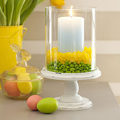

From: All You Magazine
Use the abundance of jelly beans to bring some color to the table. Place a glass hurricane on a plate or pedestal. Center a pillar candle inside it. Fill the surrounding space 1" high with one color of jellybeans , then add a 1" layer of a different color on top.
Peeps Easter Centerpiece
From: All You Magazine
Here's what you'll need:
- Two similarly shaped vases, one 3" narrower than the other
- Peeps
- Jelly Beans
- Flowers
Here are the easy steps to pulling it together:
- Inster the smaller vase inside the large.
- Layer jelly beans in the space between the two.
- Arrange on top of the jelly beans.
- Arrange your flowers

 Subscribe by Email
Subscribe by Email Pinterest
Pinterest Facebook
Facebook Twitter
Twitter